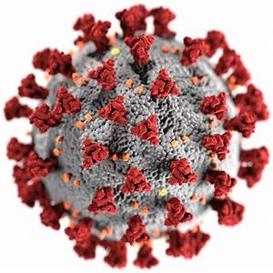

<!DOCTYPE html>
<html lang='pt-br'></html>
<head>
     <meta charset=UTF-8">
     <meta name="viewport" content"width="device-widht, initial-scale=1.0">
     <meta http-equiv="x-UA-Compatible" content="ie=edge">
     <link rel="stylesheet" href="CSS/estilo.css">'
     <title>Exercício 01</title>

     </head>
     <body>
      <center><h1>Coronavírus</h1></center>
      <center></center>
    <h1>O que é?</h1>
    <p> Coronavírus é uma família de vírus que causa infecções respiratórias. Atualmente, seu nome está sendo associado à pandemia de Covid-19 doença causada por uma nova espécie de coronavírus que provoca um tipo de pneumonia e que ainda não havia sido identificada em humanos.
    Alguns tipos conhecidos de coronavírus estão relacionados à doenças respiratórias leves e moderadas, parecidas com uma gripe comum, com sintomas como tosse, febre e falta de ar. Porém, outras cepas do vírus podem causar quadros mais graves, como é o caso da Síndrome Respiratória Aguda Grave (SARS), identificada em 2002; e a Síndrome Respiratória do Oriente Médio (MERS), identificada em 2012.
    <h1>Principais sintomas</h1>
    Os principais sintomas do Covid-19 são:tosse seca, febre e cansaço e em casos mais graves dificuldade respiratória aguda e insuficiência renal
   <h1>Como se previnir</h1>
   -Evite aglomerações </br>
   -Utilize alcool em gel ou sabão</br>
   -Manter pelo menos 2 metros de distância entre as pessoas</br>
   -Fazer uso da máscara </br>
   -Evitar mãos ao rosto</br>
   -Cobrir a boca e o nariz ao tossir ou espirrar</br>
   </p>
   <footer>

      <p class="textfo2">Pagina feita por Lana Sofia, estudante do IF baiano-Campus Guanambi </p>
  </footer>
</body>
</html> 